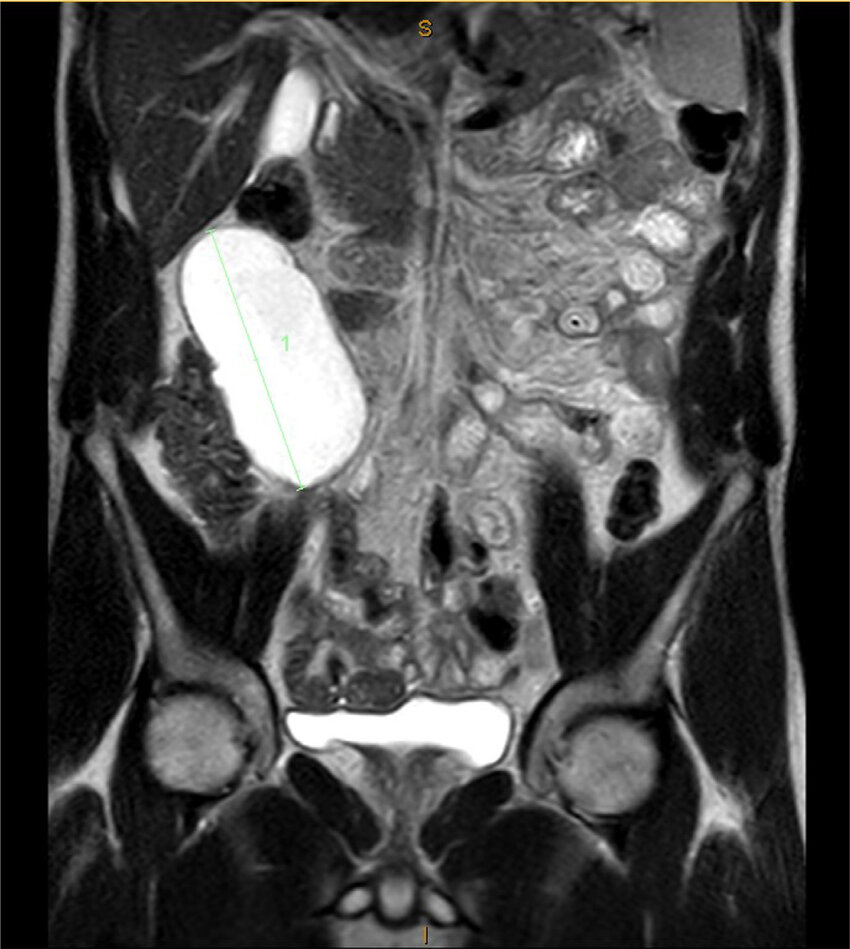
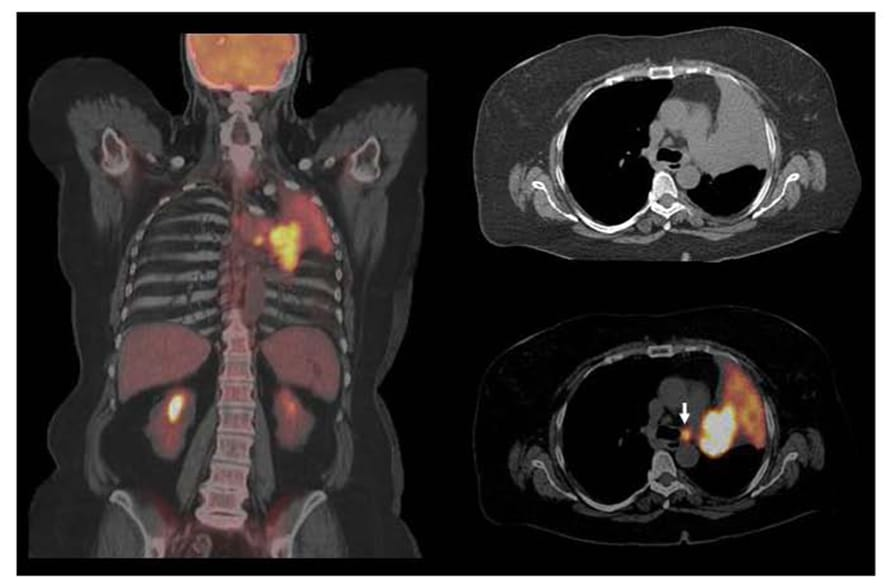

Affected Organ System
Hover over an organ to see details
Analysis Progress
NLP Processing
Extracting data from medical reports
Data Fusion
Combining multiple data sources
AI Analysis
Generating diagnostic insights
Key Health Metrics
Blood Pressure
120/80
Heart Rate
72 bpm
Temperature
36.8°C
AI-Powered Diagnostic Synthesis
Narrative Summary
Synthesizing data...
Clinical Reasoning & Differential
Evaluating possibilities...
Actionable Recommendations
Formulating recommendations...
Prognosis Outlook
MODERATE RISK
Latest Lab Results
| Biomarker / Test | Result | Trend (3 mo) | Range | Status |
|---|
Medical Imaging

MRI Abdomen (Coronal T2) - Oct 10, 2025

MRI Abdomen (Coronal T2, Detail) - Oct 10, 2025

PET/CT Fusion Scan - Oct 12, 2025

Chest X-Ray (PA View) - Oct 01, 2025

Brain MRI (Axial FLAIR) - Sep 25, 2025